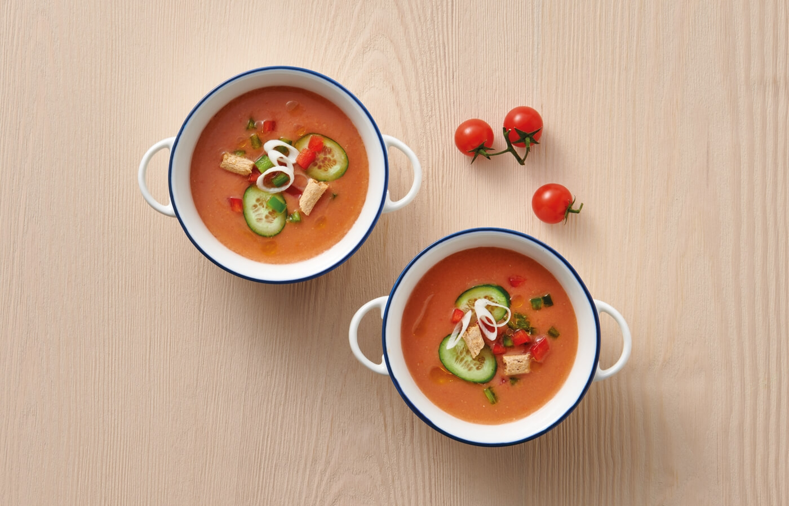

Gazpacho

"Tomate, pimiento, pepino y el toque especial del aceite de oliva.
¡Una preparación perfecta para el verano!"
Ingredientes:
- 1/2 kilo de tomates maduros
- 1/2 pimiento verde
- 1 diente de ajo
- 1/2 pepino
- 100 ml de aceite de oliva
- 4 cucharadas de vinagre de vino
- 1 rebanada de pan blanco
- Sal fina
Receta:
- Escalda y pela los tomates e introduce en el vaso de la batidora.
- Añade el pepino pelado y troceado, el pimineto , el ajo y el pan remojado en agua.
- Tritura durante unos segundo y añade sal, vinagre y aceite. Probando para rectificar si fuera preciso.
- Cuela toda la mezcla con el chino y pasala a una sopera.
- Dejar enfriar durante una hora en el frigorifico.
Información nutricional por cada 100 gramos:
- Calorías: 19
- Grasas totales: 0,1 g
- Colesterol: 0 mg
- Sodio: 303 mg
- Potasio: 92 mg
- Hidratos de carbono: 18 mg
- Fibra alimentaria; 0,2 g
- Azucares: 0,6 g
- Proteínas: 2,9 g